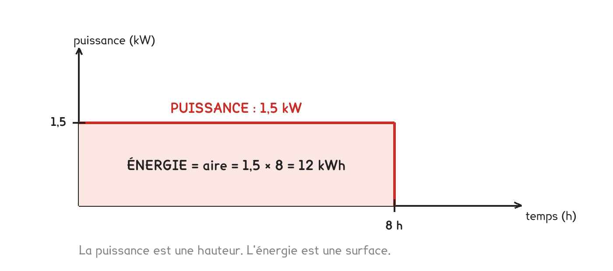

BTS FED option C · 2e année
Récapitulatif et approfondissements - Thermique du bâtimentséances 1 à 5
Les formules, les pièges, trois outils de calcul, et les approfondissements pour ceux qui veulent aller plus loin.
6 outils · 14 questions · 4 exercices · 9 replis · 8 figures
Savoirs travaillés
Les formules de la séquence
| Ce que je cherche | Formule | Unités |
|---|---|---|
| Énergie consommée | E = P × t | E en kWh, P en kW, t en h |
| Puissance transportée par l’eau | P = Q × 1 163 × ΔT | P en W, Q en m³/h, ΔT en K |
| Puissance transportée par l’air | P = Q × 0,34 × ΔT | idem |
| Résistance d’une couche | R = e / λ | R en m²·K/W, e en m |
| Résistance d’une paroi | R = Rsi + Σ(e/λ) + Rse | Rsi = 0,13 · Rse = 0,04 |
| Coefficient de la paroi | U = 1 / R | U en W/(m²·K) |
| Déperdition d’une paroi | Φ = U × S × ΔT | Φ en W, S en m² |
| Déperdition d’un pont thermique | Φ = Ψ × L × ΔT | Ψ en W/(m·K), L en m |
| Déperdition par l’air neuf | Φ = 0,34 × Q × ΔT | Q en m³/h |
| Puissance à installer | Φ total × 1,15 | |
| Signature du bâtiment | GV = Φ / ΔT | GV en W/K |
| Besoin annuel brut | GV × DJU × 24 / 1 000 | en kWh |
| Temps de retour | coût / économie annuelle | en années |
Le réflexe qui rapporte le plus : écrire la formule avant de remplacer par les nombres, vérifier les unités, puis se demander si le résultat est plausible.
Une unité contient sa formule
Ce tableau paraît long à retenir. Il ne l’est pas, parce que les unités disent déjà ce qu’il faut faire.
Chaque barre de fraction se lit « par », et chaque « par » désigne ce qu’il faut remultiplier pour revenir à des watts. U s’exprime en W/(m²·K) : il manque des mètres carrés et des kelvins, donc Φ = U × S × ΔT. Ψ s’exprime en W/(m·K) : il manque des mètres et des kelvins, donc Φ = Ψ × L × ΔT.
Un étudiant qui lit ses unités retrouve la formule sans l’avoir apprise. Et il repère l’erreur : multiplier un Ψ par une surface donne des W·m, ce qui n’existe pas.
Séance 1 · puissance et énergie

Un appareil appelle une puissance en watts. Il consomme une énergie en wattheures. Ce ne sont pas les mêmes unités, ni la même question : la puissance dit ce que la machine peut faire à chaque instant, l’énergie ce qu’elle a fait pendant une durée.
La conséquence surprend toujours : un sèche-serviettes de 500 W branché en permanence coûte plus cher qu’une plaque de 3 000 W utilisée une demi-heure. La durée compte autant que la puissance, et c’est la durée qu’on oublie.
Sur un réseau d’eau, la puissance transportée ne dépend que de deux leviers : le débit et l’écart entre le départ et le retour. Doubler l’un ou l’autre double la puissance, c’est tout ce que dit P = Q × 1 163 × ΔT.
Un écart de température en degrés Celsius vaut le même écart en kelvins. De 70 à 50 °C, c’est 20 °C et 20 K. On n’ajoute pas 273.
Trois modes de transfert se partagent le travail : la conduction propage la chaleur dans la matière, de proche en proche ; la convection l’emporte avec un fluide qui se déplace ; le rayonnement la fait voyager par ondes, sans aucun support.
Dans une paroi réelle les trois coexistent, et c’est ce qui fait la commodité du coefficient U : un seul nombre pour trois phénomènes. Conduction dans l’épaisseur, convection et rayonnement sur les deux faces.
Séance 2 · lire un dossier
Sur les neuf derniers sujets, le calcul ne représente que 17 % des questions. Quatre sur dix consistent à trouver une information et à la relever avec son unité.

Deux chaînes se superposent dans toute installation pilotée. L’une transporte la puissance, l’autre la décision. Les séparer, c’est la compétence C2-2, évaluée à chaque session.
- Que me demande-t-on ? Un chiffre, un mot, une justification, un tracé ?
- Quelle pièce du dossier contient l’information ?
- Je relève la valeur avec son unité
- Est-ce plausible ?
Si une donnée semble manquer, c’est presque toujours qu’on ne l’a pas cherchée dans la bonne pièce. Les sujets sont complets.
Un schéma de principe est un plan de liaisons, pas un plan d’implantation. Les longueurs n’y veulent rien dire. Et dans un échangeur, les deux fluides ne se mélangent jamais.
Séance 3 · λ, R et U
Trois grandeurs à ne pas confondre. λ est une propriété du matériau seul : ni l’épaisseur ni la surface n’y changent rien. R est la résistance d’une couche, et elle dépend de l’épaisseur, c’est le seul levier une fois le matériau choisi. U caractérise la paroi complète, résistances superficielles comprises.
Un isolant, c’est λ inférieur à 0,05 W/(m·K). En dessous de ce seuil, quelques centimètres suffisent à battre vingt centimètres de maçonnerie.
L’épaisseur se met en mètres dans R = e / λ. Une couche de 10 cm, c’est 0,10.
Pour dimensionner un isolant, on travaille à l’envers : le U visé donne R = 1/U, on retire ce qui n’est pas l’isolant, et e = R × λ.
Séance 4 · déperditions du bâtiment
Quatre familles, et rien d’autre : les parois (U × S × ΔT), les ponts thermiques (Ψ × L × ΔT), l’air neuf (0,34 × Q × ΔT), la marge (× 1,15).
Le classement des postes réserve souvent une surprise. Dans un bâtiment correctement isolé, l’air neuf et les ponts thermiques pèsent ensemble autant que toutes les parois : ce qui reste à gagner n’est plus dans le mur. C’est ce classement, et non le total, qui dit où mettre l’argent.
Chaque paroi a son propre écart de température. Un plancher sur vide sanitaire, un mur mitoyen, une paroi vers un local non chauffé ne voient pas l’extérieur.
Ψ se multiplie par une longueur, jamais par une surface. C’est ce qui trahit une copie qui a confondu les deux.
Séance 5 · besoin et coût
Le GV est la signature du bâtiment : sa déperdition par kelvin, indépendante de la météo. Le DJU apporte le climat. Le produit des deux donne l’énergie de la saison.
Les apports gratuits (soleil, occupants, éclairage, matériel) couvrent 20 à 30 % du besoin brut. On retient 25 % en première approche. Un logiciel réglementaire les calcule heure par heure selon l’orientation et l’occupation ; notre forfait reste utile parce qu’il donne l’ordre de grandeur en trois minutes.
Le temps de retour se lit ensuite sans difficulté : coût des travaux divisé par économie annuelle. Il compare bien deux scénarios sur un même bâtiment, et il ment dès qu’on le prend pour une prévision, le prix de l’énergie bouge, et tout ne se compte pas en euros.
Reste à situer le résultat. C’est le rôle du diagnostic de performance énergétique, refondu en 2021 : deux étiquettes au lieu d’une, l’énergie et le carbone, et la classe retenue est la plus mauvaise des deux.
On isole d’abord ce qui n’est pas isolé. Doubler un isolant existant se rentabilise très lentement ; isoler une paroi nue se rentabilise en quelques années.
Vous vérifier
- Un radiateur de 1 500 W allumé 8 h consomme : 12 kWh | 1,5 kWh
- Entre 70/50 °C et 60/40 °C, à débit égal, la puissance transportée : ne change pas | diminue de moitié
- 1 L/s vaut : 3,6 m³/h | 0,36 m³/h
- Dans un sujet d’U41, la part des questions de calcul est d’environ : 17 % | 60 %
- Un DR, dans un sujet, est un document : qu’on rend, même vide | qu’on garde
- L’épaisseur, dans R = e / λ, se met : en mètres | en centimètres
- Entre U = 0,20 et U = 0,35, la mieux isolée est : celle à 0,20 | celle à 0,35
- Rsi = 0,13 vaut pour : un mur vertical | toutes les parois
- Ψ se multiplie par : une longueur | une surface
- Un plancher sur vide sanitaire à 8 °C, pour θi = 19 °C, a un ΔT de : 11 K | 26 K
- La marge de dimensionnement usuelle est de : 15 % | 50 %
- Le GV s’exprime en : W/K | kWh
- Le besoin brut se calcule avec : GV × DJU × 24 / 1 000 | GV × DJU / 24
- Le meilleur temps de retour s’obtient en isolant : une paroi nue | une paroi déjà isolée
Pour aller plus loin
Pour aller plus loin
1 163 et 0,34 sont la même formulePour aller plus loin›
Vous croisez ces deux nombres toute l’année. Ce ne sont pas deux constantes à apprendre, c’est deux fois la même : la masse volumique du fluide multipliée par sa chaleur massique, divisée par 3 600 pour travailler en m³ par heure.
| Fluide | ρ (kg/m³) | Cp (J/kg·K) | ρ·Cp / 3 600 |
|---|---|---|---|
| Eau | 1 000 | 4 186 | 1 163 |
| Air | 1,2 | 1 005 | 0,34 |
Le rapport vaut environ 3 400. À puissance et écart égaux, il faut 3 400 fois plus de volume d’air que d’eau. Pour 1 kW sous 20 K : 43 litres d’eau par heure, ou 147 m³ d’air.
Voilà pourquoi on chauffe à l’eau et on ventile à l’air, et pourquoi une gaine fait Ø 125 quand un tube fait Ø 16.
Un kVA n'est pas un kWPour aller plus loin›
Le volt-ampère mesure la puissance apparente S = U × I : ce que le réseau doit fournir. Le watt mesure la puissance active P, celle qui travaille.
P = S × cos φ
Pour un radiateur, un ballon, une plaque (des résistances) cos φ vaut 1 : 6 kVA valent bien 6 kW. Pour un moteur, un circulateur, un compresseur, cos φ descend vers 0,8 : le réseau fournit 6 kVA mais 4,8 kW seulement travaillent.
C’est pour ça qu’un abonnement se dimensionne en kVA. Et 6 kVA sous 230 V, c’est 26 A : le calibre du disjoncteur de branchement.
D'où sortent Rsi = 0,13 et Rse = 0,04Bureau d'études›
Chacun des trois modes a sa loi, et ce sont elles qui fixent les nombres que vous utilisez sans les recalculer.
| Mode | Loi | Ce qu’elle dit |
|---|---|---|
| Conduction | φ = −λ · grad T | loi de Fourier : c’est d’elle que sort R = e/λ |
| Convection | φ = h · (Ts − Tf) | loi de Newton ; h en W/(m²·K) |
| Rayonnement | φ = ε · σ · T⁴ | loi de Stefan-Boltzmann |
Les résistances superficielles sont l’inverse du coefficient d’échange, convection et rayonnement confondus :
Rsi = 1 / 7,7 = 0,13 et Rse = 1 / 25 = 0,04
À l’extérieur, le vent brasse l’air : h est trois fois plus grand, donc la résistance trois fois plus petite.
Pourquoi les résistances s'additionnentPour aller plus loin›
« Comme des résistances électriques en série » n’est pas une image : c’est la même équation.
| Électricité | Thermique | |
|---|---|---|
| Ce qui pousse | U (volts) | ΔT (kelvins) |
| Ce qui circule | I (ampères) | Φ (watts) |
| Ce qui freine | R (ohms) | R (m²·K/W) |
| La loi | I = U / R | Φ = ΔT / R |
Des couches empilées sont traversées par le même flux, l’une après l’autre : c’est une série, et les résistances s’ajoutent.
En parallèle ? Dès qu’une paroi n’est pas homogène, ossature bois avec isolant entre les montants. Deux chemins se partagent le flux, et ce sont les inverses qui s’ajoutent : 1/R = 1/R₁ + 1/R₂.
Conséquence de chantier : les montants font passer la chaleur à côté de l’isolant. C’est un pont thermique intégré, et il dégrade le U de 10 à 15 %.
Le coefficient b, la vraie méthode des locaux non chauffésBureau d'études›
En séance, pour un plancher sur vide sanitaire à 8 °C, vous utilisez l’écart réel : 11 K. C’est juste. La norme, elle, garde partout l’écart avec l’extérieur et introduit un coefficient de réduction.
Φ = b × U × S × (θi − θe) avec b = (θi − θu) / (θi − θe)
Sur l’exemple : b = 11 / 26 = 0,42. Les deux méthodes donnent le même résultat, l’une remplace l’écart, l’autre le pondère.
L’intérêt du b apparaît quand on ne connaît pas θu, le cas le plus fréquent. La norme donne alors des valeurs tabulées.
| Local non chauffé | b usuel |
|---|---|
| Circulation, cage d’escalier | 0,2 à 0,3 |
| Vide sanitaire, cave | 0,4 à 0,5 |
| Garage, local très aéré | 0,8 à 0,9 |
| Comble perdu bien ventilé | 0,9 à 1,0 |
Un b proche de 1 veut dire « ce local est pratiquement dehors ».
Les Ψ : où on les trouve, et pourquoi l'ITE gagneBureau d'études›
Les Ψ ne s’inventent pas : ils sont tabulés dans les règles Th-U, fascicule 5, par type de liaison et par mode d’isolation.
| Configuration | Ψ (W/m·K) |
|---|---|
| Isolation par l’intérieur, plancher béton traversant | 0,60 à 0,90 |
| ITI avec rupteur thermique | 0,25 à 0,40 |
| Isolation par l’extérieur, isolant continu | 0,05 à 0,15 |
| Liaison menuiserie, pose au nu de l’isolant | 0,05 à 0,15 |
L’isolation par l’extérieur divise le pont thermique par cinq à dix. C’est sa vraie supériorité, bien plus que le gain de surface habitable.
La raison est géométrique. En ITI, le plancher béton passe derrière l’isolant et ressort dehors : rien ne peut l’arrêter. En ITE, l’isolant est devant tout, y compris devant le plancher.
Du besoin utile à la facture : les quatre rendementsPour aller plus loin›
Le besoin net est un besoin utile : la chaleur à livrer dans les pièces. Ce n’est pas ce qui est facturé. Entre les deux, quatre rendements qui se multiplient.
Consommation = Besoin / (ηémission × ηdistribution × ηrégulation × ηgénération)
| Rendement | Installation soignée | Installation ancienne |
|---|---|---|
| Émission | 0,95 | 0,90 |
| Distribution | 0,95 | 0,80 |
| Régulation | 0,97 | 0,85 |
| Génération | 1,00 (condensation) | 0,75 |
| Produit | 0,88 | 0,46 |
Le même bâtiment consomme presque deux fois plus selon l’installation qui le chauffe. Et ce chiffre ne se voit dans aucun calcul de U.
La pompe à chaleur mérite un mot : son rendement de génération dépasse 1. Un COP de 3 donne ηg = 3. Elle ne produit pas la chaleur, elle la déplace.
Énergie finale, énergie primaire, et le DPEBureau d'études›
La facture compte des kilowattheures d’énergie finale : ceux qui entrent dans le bâtiment. La réglementation raisonne en énergie primaire : ce qu’il a fallu prélever à la nature, transport et transformation compris.
| Énergie | Coefficient (RE2020) |
|---|---|
| Électricité | 2,3 |
| Gaz, fioul, bois, réseau de chaleur | 1,0 |
Conséquence qui surprend : à consommation finale égale, un bâtiment chauffé à l’électricité affiche une étiquette DPE plus mauvaise qu’un bâtiment au gaz.
Une pompe à chaleur change tout : un COP de 3 divise la consommation finale par 3, et ramène le coefficient effectif à 2,3 / 3 ≈ 0,77.
Quand vous calculez un ratio en kWh/(m²·an), précisez toujours lequel : utile, final ou primaire. Les trois peuvent varier du simple au triple.
Ce que la méthode des DJU ne sait pas fairePour aller plus loin›
Elle est excellente pour comparer des scénarios sur un même bâtiment, et fausse dès qu’on lui en demande plus.
| Ce qu’elle ignore | Pourquoi ça compte |
|---|---|
| L’inertie | un bâtiment lourd amortit les pointes de froid |
| L’orientation | une façade sud n’a pas les apports d’une façade nord |
| Le comportement | l’écart entre deux occupants dépasse souvent celui entre deux isolations |
| L’été | le DJU ne parle que de chauffage |
Base 18 ou base 15 ? Le DJU unifié se compte sous 18 °C, en supposant que les apports gratuits fournissent les derniers degrés. Comparer deux DJU sans connaître leur base n’a aucun sens.
Pour la conformité réglementaire, un moteur horaire simule les 8 760 heures de l’année. Mais il demande une heure de saisie, quand les DJU donnent l’ordre de grandeur en trois minutes.
S’entraîner
Les valeurs attendues ne sont pas dans la page : elle vous dit si c’est juste et vous rappelle la méthode. Le corrigé reste dans le polycopié.
Exercice · A1-2
La résistance d’une couche
Une couche de laine minérale de 20 cm a une conductivité λ = 0,035 W/(m·K). Quelle est sa résistance thermique ?
Exercice · A2-3
La déperdition d’un mur
Un mur de 45 m² a un coefficient U = 0,27 W/(m²·K). Il fait 20 °C dedans et −5 °C dehors. Quelle est sa déperdition ?
Exercice · C12-2
Lire un tableau de coefficients
Extrait du CCTP d’une maison individuelle.
| Paroi | Surface | U : W/(m²·K) |
|---|---|---|
| Murs extérieurs | 96 m² | 0,24 |
| Plancher bas | 74 m² | 0,31 |
| Toiture | 74 m² | 0,16 |
| Menuiseries | 18 m² | 1,40 |
En laissant les menuiseries de côté, quelle paroi opaque est la moins isolante ?
Exercice · A2-4
Deux maisons, deux factures
Deux maisons identiques ont le même GV. L’une est à Nice, l’autre à Strasbourg. Expliquez en trois lignes pourquoi leurs besoins annuels de chauffage diffèrent.
- Le mot « DJU » ou « degrés-jours » apparaît dans ma réponse.
- J’ai dit que le GV ne dépend que du bâtiment, pas du climat.
- J’ai nommé la ville qui consomme le plus, et pourquoi.
Cette page ne remplace pas les polycopiés et ne donne aucun corrigé. Les outils démarrent sur des cas voisins de ceux des activités, jamais identiques : ils servent vos missions chantier. Tous les calculs se font dans votre navigateur ; rien n'est enregistré.